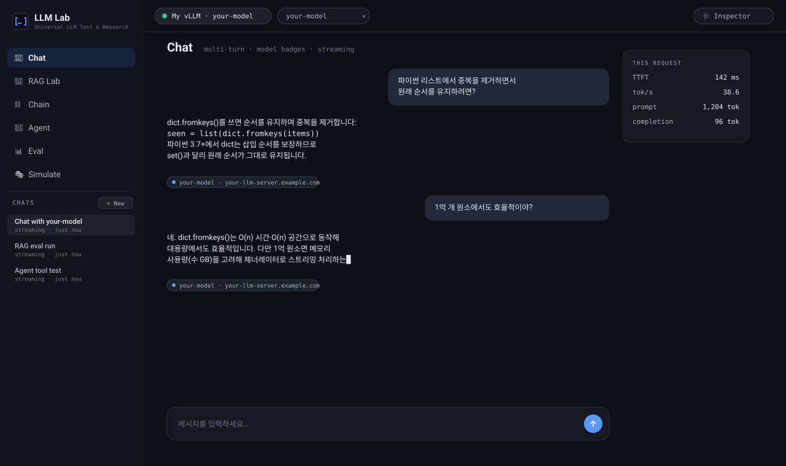
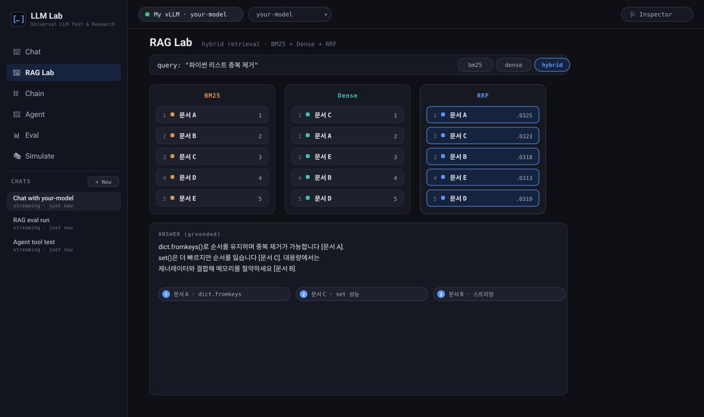
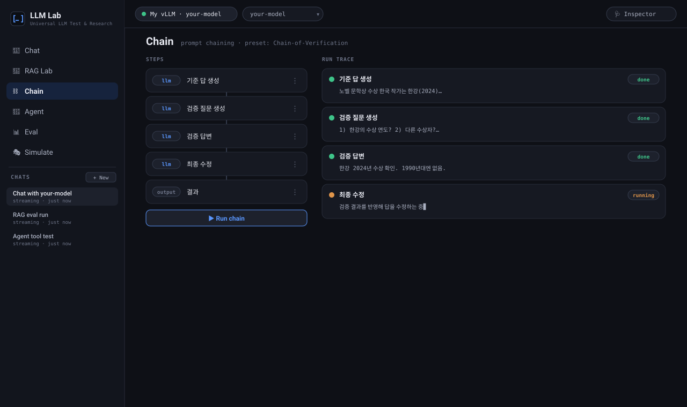
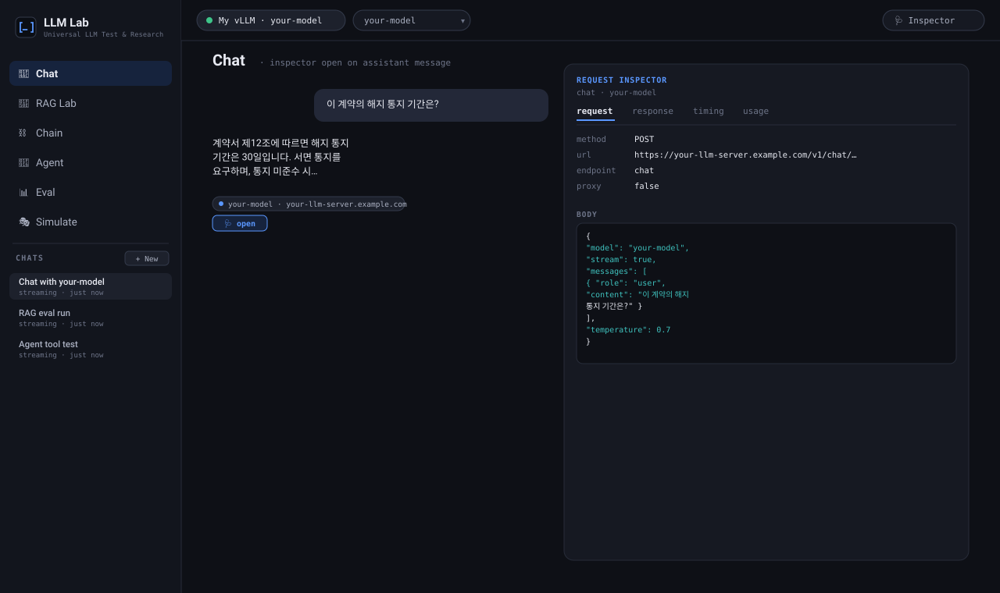
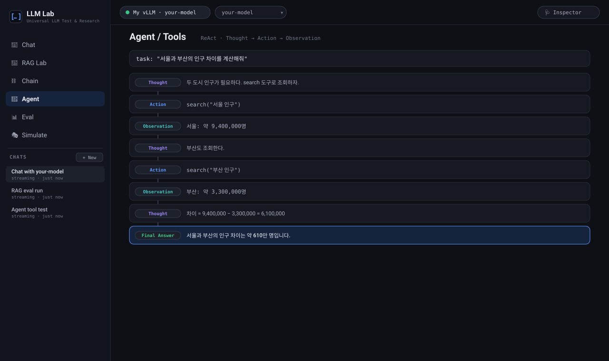

LLM Lab은 “이 모델 서버가 실제로 동작하는가, 그리고 고급 기법이 내 모델 위에서 어떻게 동작하는가”를 한 화면에서 확인하게 해주는, 빌드·프레임워크·계정이 필요 없는 순수 프론트엔드 연구 콘솔이다.
LLM Lab is a build‑free, framework‑free, account‑free frontend console that lets engineers answer two questions in one place: “does this model endpoint actually work?” and “how do advanced techniques (RAG, chaining, agents, eval) behave on my own model?” — with every request fully inspectable.
왜 이걸 만들었나
사내·연구용으로 LLM 추론 서버(vLLM 등)를 세우고 나면 반복적으로 부딪히는 질문이 있다. “이 엔드포인트가 제대로 응답하나? 스트리밍은? 토큰 속도는? reasoning은 오나?” 이걸 확인하는 방법은 대개 셋 중 하나였다.
- 흩어진
curl명령 — 스트리밍·헤더·usage를 눈으로 읽기 불편하고 재현이 안 됨. - 일회용 파이썬 스크립트 — 매번 다시 짜고, 팀과 공유가 어려움.
- 특정 벤더를 전제한 무거운 플랫폼 — 내가 직접 운영하는 임의의 OpenAI 호환 엔드포인트엔 안 맞음.
게다가 검증은 “응답이 오나”에서 끝나지 않는다. 실제로는 RAG(하이브리드 검색), 프롬프트 체이닝, 에이전트, 평가 같은 고급 파이프라인이 바로 그 모델 위에서 어떻게 동작하는지가 궁금하다. 그런데 이런 실험을 하려면 또 별도의 프레임워크와 인프라가 필요했다.
이 플랫폼이 지향하는 것
어떤 모델이든
하드코딩된 모델 없이, 사용자가 연결 프로필로 임의의 OpenAI 호환 서버를 붙인다.
설치·빌드 없음
순수 HTML/CSS/JS. 정적 호스트에 파일만 올리면 끝. file://로도 열린다.
연구급 기능
단순 채팅을 넘어 하이브리드 RAG·체이닝 20종·ReAct 에이전트·A/B 평가·시뮬레이션.
완전한 가시성
요청 URL·헤더·본문·스트림·타이밍·토큰을 메시지별로 인스펙터에 노출.
핵심 가치는 “Bring‑Your‑Own‑Everything”과 투명성이다. 벤더를 가정하지 않고, 사용자의 키·엔드포인트·데이터는 브라우저에만 머물며, 도구가 브라우저 밖으로 내보낸 것을 하나도 숨기지 않는다.
누구를 위한 것인가
- LLM 인프라 엔지니어 — 자체 호스팅한 vLLM/TGI 엔드포인트의 동작·성능(TTFT, tok/s)을 즉시 검증.
- AI 연구자 — RAG 융합(RRF)·프롬프트 체이닝·에이전트 패턴을 자기 모델에서 재현·비교.
- 프롬프트/제품 개발자 — A/B·judge로 프롬프트·모델을 정량 비교하고, 인스펙터로 실제 페이로드를 학습.
무엇을 할 수 있나

Chat — 멀티 세션 대화
모델을 바꿔가며 대화, ChatGPT식 다중 세션, 메시지별 “어떤 모델·도메인으로 답했는지” 뱃지, 스트리밍·reasoning 표시.
RAG Lab — 하이브리드 검색
BM25(렉시컬)·Dense(임베딩)·RRF(상호 순위 융합) 하이브리드·GraphRAG 뷰어. 청킹·검색·인용 답변을 실측.
Chain — 프롬프트 체이닝
llm/condition/transform/output 스텝으로 워크플로 구성. CoT·Self‑Refine·CoVe·Map‑Reduce·분류라우팅 등 프리셋 20종 내장.
Agent — ReAct 도구 호출
Thought → Action → Observation 루프로 도구를 호출하는 에이전트, 단계별 트레이스.
Eval — 정량 비교
A/B, N회 반복 변동성, 단어 단위 diff, LLM‑as‑judge 채점.
Inspector — 완전한 가시성
요청/응답/타이밍(TTFT·tok/s)/토큰 사용량 + curl·Python·fetch 재현 스니펫. 메시지별 귀속.




어떻게 만들었나
가장 중요한 결정은 “프레임워크·빌드 없는 순수 프론트엔드”였다. 이유는 명확하다 — 이 도구의 사용자는 인프라 엔지니어이고, 그들이 원하는 건 어떤 서버에든 파일만 올리면 즉시 뜨는 것이다. 번들러·Node·CI가 끼면 “테스트 도구를 쓰기 위해 빌드 파이프라인을 세워야 하는” 모순이 생긴다.
계층 구조
- 엔진(
llmlab.js) — 연결 프로필 관리 + 커널(요청·스트림·인스펙트). 모든 워크벤치가 이 커널을 공유. - 능력 어댑터(
rag-chain.js,agent-eval-sim.js) — RAG·Chain·Agent·Eval·Simulate를 엔진 위에 “추가”로 얹음. - 선택 백엔드(PHP) —
proxy.php(CORS 회피·SSE 릴레이),search.php(웹 검색),db/(RDB·pgvector·Neo4j). 공유호스팅(장기 프로세스 불가)에 맞춰 요청당 처리로 설계.
까다로웠던 지점들
메시지별 인스펙터
전역 “마지막 요청” 하나가 아니라, 각 메시지가 자기 요청 스냅샷을 소유. 모델을 바꿔가며 대화해도 각 답변이 실제로 어느 도메인·모델로 갔는지 추적된다.
RRF 하이브리드
렉시컬·시맨틱을 점수 정규화 없이 순위만으로 합치는 RRF(k=60)를 기본으로, 이질적 검색기를 안정적으로 융합.
런타임 캐시버스팅
index.html이 로컬 에셋을 ?t=Date.now()로 로드 → 파일만 덮어써도 새로고침 시 항상 최신본. 배포 후 “반영 안 됨” 문제를 근본 차단.
Graceful degradation
PHP 확장(pgvector·Neo4j 드라이버)이 없으면 크래시 대신 “무엇이 가능한지”를 보고. 데모 SQLite로 무설정 체험.
결과
- 한 화면 검증 — 엔드포인트 연결부터 TTFT·tok/s·usage 확인, 고급 파이프라인 실험까지 도구 전환 없이 완결.
- 이식성 — 빌드 없는 단일 코드베이스가 정적/PHP 두 배포 모드를 모두 커버.
- 재사용성 — 연결 프로필 import/export로 팀이 엔드포인트 설정을 공유.
- 안전한 공개 — 키·엔드포인트를 코드에서 분리(브라우저 localStorage 전용)해 오픈소스로 배포 가능.
배운 점
브라우저에서 SSE 스트리밍 릴레이, 혼합콘텐츠·CORS의 실제 제약, flexbox 스크롤·캐시 계층 같은 “배포에서만 드러나는” 문제들을 다루며, 테스트 도구 자체가 가장 현실적인 통합 테스트가 된다는 걸 확인했다.
더 보기
- 저장소 ·
README.md— 설치·연결·배포 가이드(한/영) docs/API_프로필_형식_가이드.md— 연결 프로필 JSON 형식 정본docs/LLM_Lab_학습노트.html— RAG·RRF·GraphRAG·체이닝·에이전트 통합 학습 노트